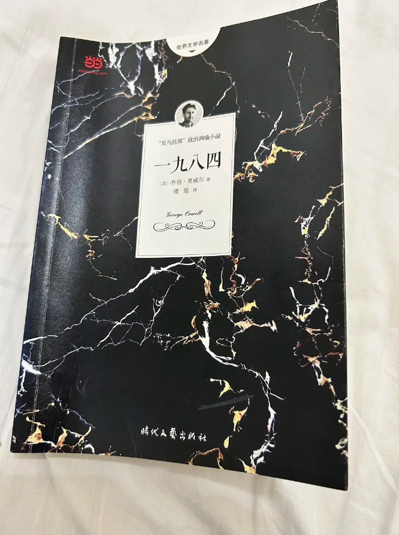

正文
中秋国庆双节连休，借放假时间陪女朋友回家。度假期间比较闲，刚好在她房间书架上看到一本熟悉的不能再熟悉的书——乔治奥威尔的《1984》。
第一次读它还是在高中。那时候由于刚回来补文化课，正在思考怎样提高自己语文作文的写作水平。那时作文基本都是议论文体裁，一般是对某个时事进行一番评论写作。恰好我又是个较真的人，一般对着一些时事我会去网上搜各种视角的观点。当时的思想还比较“数学”，喜欢把社会问题当成数学的优化问题来看待。于是就会想：最优的制度到底是什么？有没有一种通法能解决所有的社会问题，这样就可以终结一切的辩论了？这其实就和乌托邦不谋而合了。查的多了，我也就知道了关于反乌托邦的一些文学作品和观点。
重读第二遍，依旧记得第一次读完这本书时对我的世界观的冲击。两次阅读之间经历了很多事（最具代表性的当然就是疫情），感受也大不相同，不过肯定已经不是“对周围世界的崩塌感与怀疑感”了。第二次读时，这本书早就耳熟能详，作为反乌托邦三部曲更是早就被鉴证圈说烂了。其实以苛刻的眼光，仍能找出书中理论体系的漏洞，比如说其实作者刻画的苦难和核心矛盾更多问题似乎并不出在“极权”，而是“贫穷”，生产力不足——但极权是否一定会导致生产力不足？生活在一个人人富足但是被老大哥控制的世界是否是幸福的？这是我们今天仍然可以思考的一些问题。
不管是否认同书中的观点，有一点我是非常赞成的——要保持怀疑，这也是我认为应该看《1984》的最大理由。关键点就在于，当你看过乔治奥威尔给你精心“构造的这个例子”之后，你内心就多了一份警惕，思想和眼界也更加开阔。你懂的反思这个例子的社会问题所在，懂得思考核心矛盾在哪，懂得去将其和现实比对，懂得在（只是假设）有一天如果真遇到某种思想控制的手段的时候，会因为这段阅读经历，在思维的最深处保留追求真实世界的炽热。
是啊，讲道理是乏味的，正如数学的证明过程，有时冗长而无聊——虽然可能过程是正确的。试想一下，你想反驳一个人的观点，最直接的方式是什么？是长篇大论说明他是错的？不，是直接给出一个反例。这样双方都会讲注意力从虚无渺茫的语言游戏变成仔细审视这个例子（模型）的合理性。
这里的合理性有两重：1. 在这个例子（或者模型）的假设下，结论是否成立，我称之为“推演合理”；2. 这个例子是否可以支持原来的论点，即这个例子是否是一个对原来问题的充分刻画，我称之为“类比合理”。对读者来说，如果你想用《1984》来挑战一些不好说的滑梯，可以想想这两方面是否充分。我们不妨称之为“社会学的构造法”。其实中西方的先贤早就已经不断在使用这个方法来探讨真理了。广义的来讲，哲人的一切类比、譬喻，其实都是在构造呢。
这里其实有一点“Meta”的意思了：我们可以用《1984》书中的情节来反问《1984》本身。既然书中说历史是可以篡改的，思想是可以改造的，那我们又如何确定《1984》本身不是一个思想改造的手段呢？又或者说，我们如何判断一个例子是否是“推演合理”以及“类比合理”的呢？具体到日常生活中，我们接触到的形形色色、各路媒体传播的各种信息，我们发现任何时候我们都需要判断——如果需要保持“怀疑”的话。
答案是，无法判断。没人能教会一个人应该怎么判断，因为教这种行为又何尝不是在思维改造呢——如果真这样想的话，其实就有些虚无主义了。确实是可以这么想，但是我个人并不觉得这合理，充其量这只是口水仗上的一种逻辑胜利的方式。它无法被反驳，也并没有什么用——至少，我是相信2+2=4的。这可能是我数学老师教我的，但我仍然相信它。
那么怀疑究竟应该到什么程度呢？回到书中，即使在那样的社会下，在送到仁爱部之前，主角还是相信“2+2=4”的。因此，我们只要基于常识与良知就好。至少，我们在记忆中是没有经历过什么严刑拷打的，（至于真的被洗脑过然后删除记忆的离谱假设，一律用剑斩掉吧！）我们相比温斯顿所能做的更多的，就是我们可以和有着不同人生经历、文化背景的人交流同一件事实，然后求同存异。
“社会学的构造法”给出例子，提高民众的理性精神；而当民众学会怀疑后，又能更好地检验“例子”的合理性。“民智”大概就是这样迭代而上升的吧。这样的进步，不得不感谢《1984》了。
2023.10.06，凌晨，某个小县城的旅店里